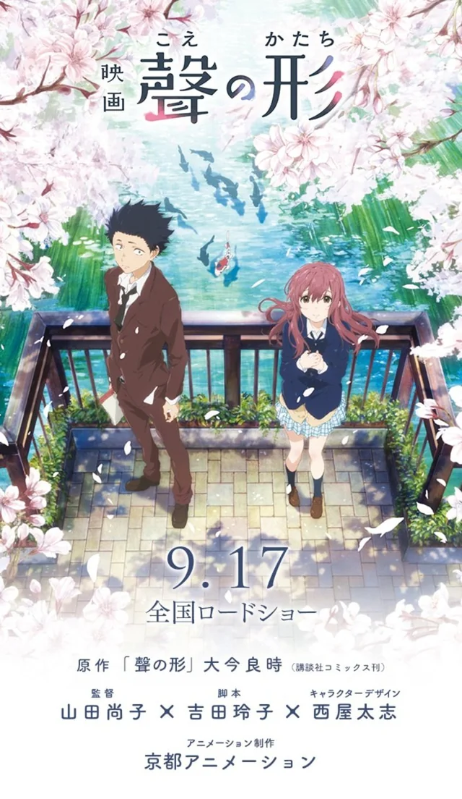
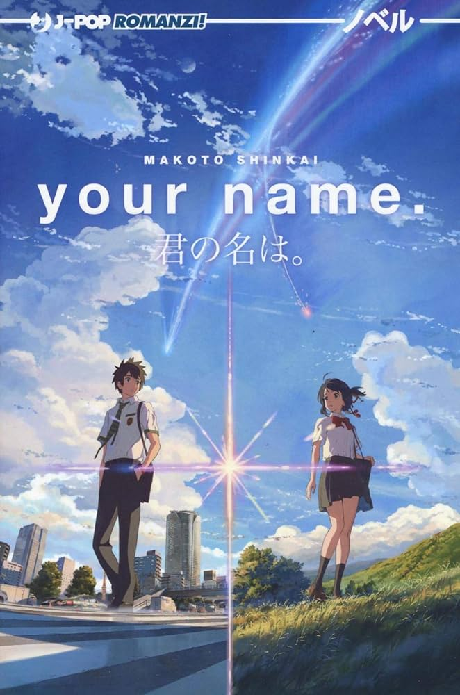
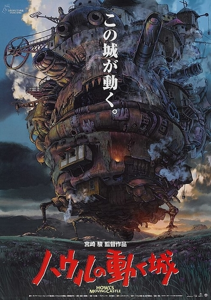
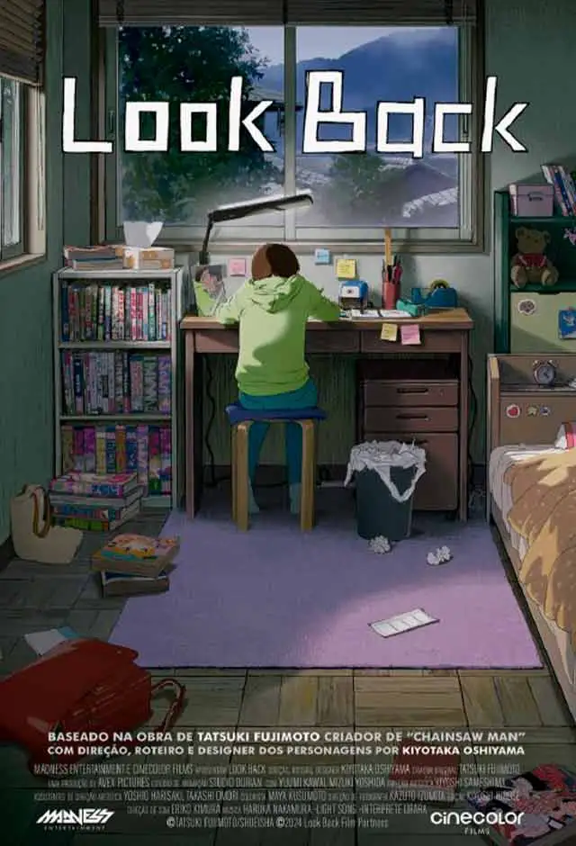
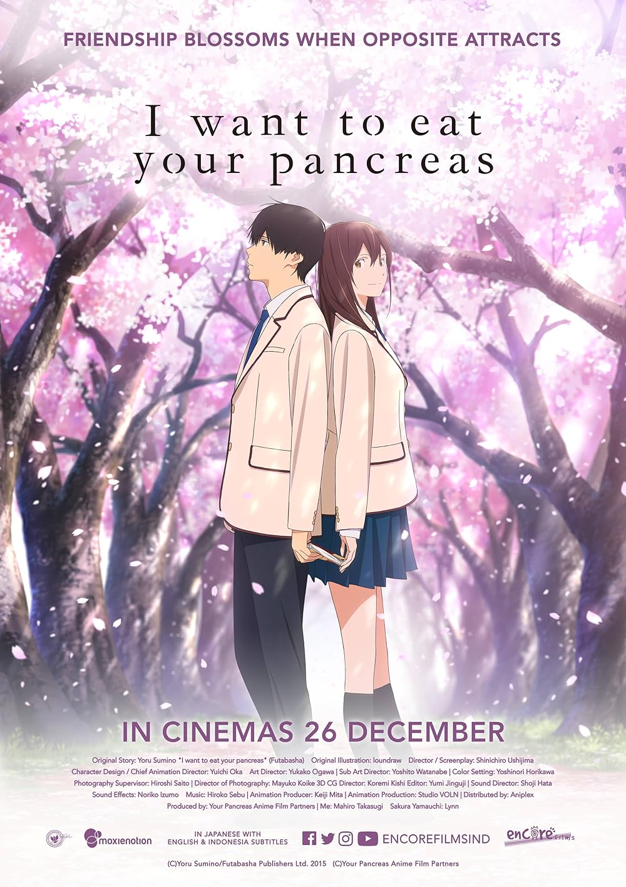
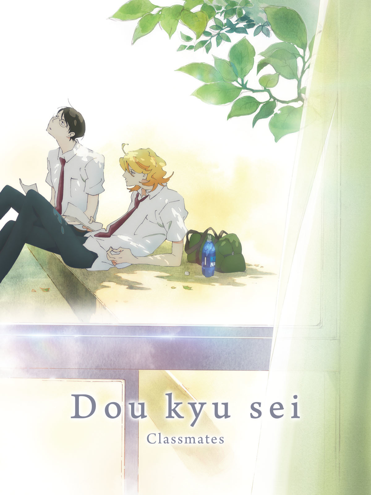
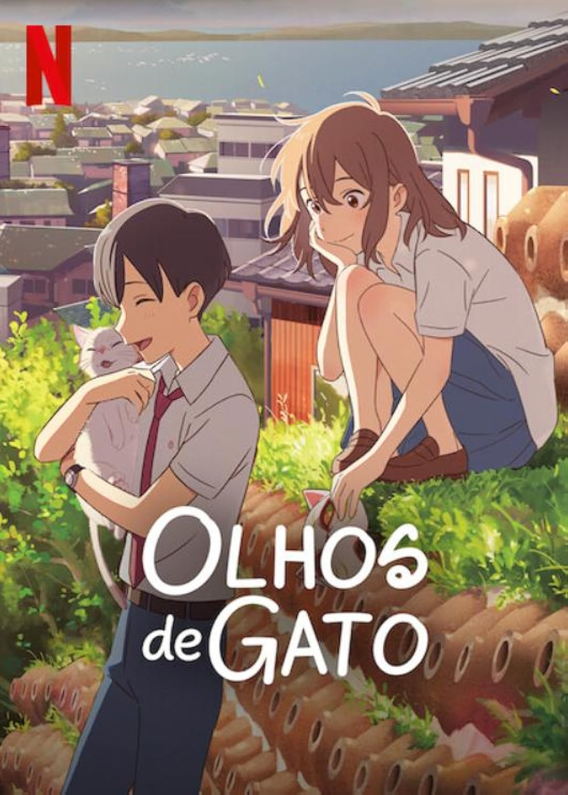
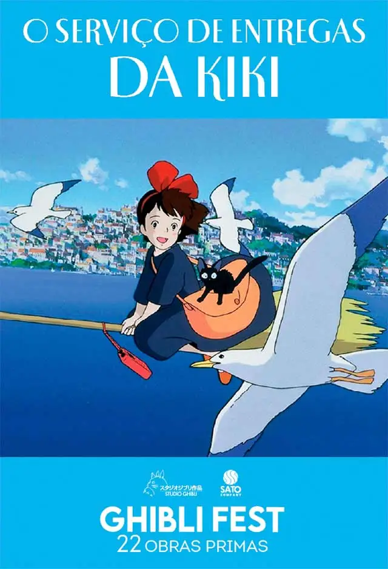

Os filmes de anime são produções cinematográficas que contam histórias completas em um único longa-metragem, geralmente
com maior qualidade de animação, trilha sonora mais elaborada e direção mais cuidadosa em comparação com séries de TV. Por
terem duração limitada, essas obras costumam apresentar narrativas mais diretas e bem estruturadas, com começo, meio e fim
definidos.
Esses filmes podem ser histórias originais ou adaptações de séries já existentes, funcionando tanto como continuações
quanto como narrativas independentes. Em muitos casos, eles exploram momentos importantes da trama ou aprofundam o
desenvolvimento de personagens, oferecendo uma experiência mais intensa e emocional.
Além disso, os filmes de anime abrangem diversos gêneros — como romance, ação, fantasia e drama — e frequentemente se
destacam pelo forte impacto visual e emocional. A combinação de animação de alta qualidade com trilhas sonoras marcantes
contribui para criar experiências imersivas que muitas vezes se tornam memoráveis para o público.

Chainsaw Man Movie: Reze-hen adapta o arco da “Garota Bomba” da obra de Tatsuki Fujimoto, dando
continuidade à história de Denji, o jovem caçador de demônios que possui o poder de se transformar no temido Chainsaw Man.
Na trama, Denji conhece Reze, uma garota aparentemente doce e misteriosa que surge em sua vida de forma inesperada.
Encantado pela atenção e carinho que nunca teve, ele rapidamente se aproxima dela, vivendo momentos raros de tranquilidade e
afeto em meio à sua rotina violenta.
No entanto, esse encontro está longe de ser coincidência. Reze esconde uma identidade perigosa ligada a forças inimigas, e o
que começa como um romance leve logo se transforma em um conflito intenso e devastador.
Entre batalhas explosivas e revelações chocantes, Denji se vê dividido entre seus sentimentos e sua realidade como arma
humana, enquanto enfrenta uma das ameaças mais perigosas que já cruzaram seu caminho.

Koe no Katachi (A Silent Voice) acompanha Shoya Ishida, um jovem que, quando criança, praticava bullying
contra Shoko Nishimiya, uma colega surda que havia acabado de se transferir para sua escola.
Anos depois, consumido pela culpa e arrependimento, Shoya decide procurar Shoko para tentar se redimir e consertar os erros
do passado. No entanto, essa reconexão não é simples, já que ambos carregam traumas profundos e dificuldades em se comunicar.
Ao longo da história, eles enfrentam suas inseguranças, lidam com as consequências de suas ações e tentam reconstruir laços,
enquanto aprendem sobre empatia, perdão e aceitação.

Kimi No Na Wa (Your Name) é um filme de anime dirigido por Makoto Shinkai que conta a história de dois
adolescentes, Taki e Mitsuha, que vivem em lugares diferentes do Japão e nunca se encontraram. De repente, eles começam a
trocar de corpo de forma inexplicável, vivendo a vida um do outro e enfrentando desafios únicos.
Conforme eles tentam entender o fenômeno, uma conexão profunda se desenvolve entre eles, mesmo sem terem se conhecido
pessoalmente. A trama mistura elementos de romance, drama e fantasia, explorando temas como destino, identidade e a busca por
conexão humana.
O filme é conhecido por sua animação deslumbrante, trilha sonora envolvente e narrativa emocionante, conquistando fãs ao
redor do mundo e se tornando um dos filmes de anime mais aclamados da história.

A Viagem de Chihiro (Spirited Away) é um filme de anime dirigido por Hayao Miyazaki e produzido pelo
Studio Ghibli. A história segue Chihiro, uma garota de 10 anos que, ao se mudar para uma nova cidade, acaba entrando em um
mundo mágico e misterioso habitado por espíritos, deuses e criaturas fantásticas.
=======
Kimi No Na Wa (Your Name) é um filme de anime dirigido por Makoto Shinkai que conta a história de dois adolescentes, Taki e Mitsuha,
que vivem em lugares diferentes do Japão e nunca se encontraram. De repente, eles começam a trocar de corpo de forma inexplicável,
vivendo a vida um do outro e enfrentando desafios únicos.
Conforme eles tentam entender o fenômeno, uma conexão profunda se desenvolve entre eles, mesmo sem terem se conhecido pessoalmente.
A trama mistura elementos de romance, drama e fantasia, explorando temas como destino, identidade e a busca por conexão humana.
O filme é conhecido por sua animação deslumbrante, trilha sonora envolvente e narrativa emocionante, conquistando fãs ao redor do mundo e
se tornando um dos filmes de anime mais aclamados da história.
A Viagem de Chihiro (Spirited Away) é um filme de anime dirigido por Hayao Miyazaki e produzido pelo Studio Ghibli. A
história segue Chihiro, uma garota de 10 anos que, ao se mudar para uma nova cidade, acaba entrando em um mundo mágico e
misterioso habitado por espíritos, deuses e criaturas fantásticas.
>>>>>>> a4a02a2827f6f067cbe15421745be7bd0d2ca25c
Presa nesse mundo estranho, Chihiro precisa encontrar uma maneira de salvar seus pais, que foram transformados em porcos, e
retornar ao mundo real. Para isso, ela começa a trabalhar em um banho público administrado por uma bruxa poderosa chamada
Yubaba, enfrentando desafios e fazendo amizades ao longo do caminho.
O filme é conhecido por sua animação impressionante, narrativa envolvente e temas profundos sobre crescimento pessoal,
coragem e a importância da amizade.

O Castelo Animado (Howl’s Moving Castle) acompanha Sophie, uma jovem que leva uma vida simples até ser
amaldiçoada por uma bruxa e transformada em uma idosa. Sem saber como quebrar o feitiço, ela acaba encontrando o misterioso
Howl, um poderoso e excêntrico mago que vive em um castelo mágico que se move pelo mundo.
Ao se envolver com Howl e seus segredos, Sophie passa a viver dentro desse castelo, ao lado de figuras peculiares como o
espírito do fogo Calcifer. Enquanto tenta encontrar uma forma de reverter sua maldição, ela também descobre mais sobre si
mesma e sobre o verdadeiro coração de Howl.
Em meio a um cenário de guerra e magia, a história mistura fantasia, aventura e romance, explorando relações e
transformações internas.

Look Back é um filme de anime dirigido por Tatsuki Fujimoto, baseado em seu próprio mangá. A história
acompanha a vida de duas amigas, Fujino e Kyomoto, que compartilham uma paixão pela arte. Desde a infância, elas desenham
juntas e sonham em se tornar mangakás famosas.
Conforme crescem, suas vidas tomam rumos diferentes, mas a amizade entre elas permanece forte. No entanto, um evento
trágico abala essa conexão, levando a uma série de emoções complexas e reflexões sobre o passado, o presente e o futuro.
O filme é conhecido por sua narrativa emocionalmente intensa, explorando temas como amizade, perda e a importância de
valorizar os momentos compartilhados com as pessoas que amamos.

Kimi no Suizou wo Tabetai (I Want to Eat Your Pancreas) é um filme de anime dirigido por Shinichiro
Ushijima, baseado no romance de Yoru Sumino. A história acompanha um garoto solitário que encontra um diário em um hospital,
descobrindo que pertence a uma colega de classe chamada Sakura, que está gravemente doente com uma doença pancreática. Apesar
de sua condição, Sakura é cheia de vida e deseja aproveitar cada momento ao máximo.
=======
Look Back é um filme de anime dirigido por Tatsuki Fujimoto, baseado em seu próprio mangá. A história acompanha a vida de duas amigas,
Fujino e Kyomoto, que compartilham uma paixão pela arte. Desde a infância, elas desenham juntas e sonham em se tornar mangakás famosas.
Conforme crescem, suas vidas tomam rumos diferentes, mas a amizade entre elas permanece forte. No entanto, um evento trágico abala essa
conexão, levando a uma série de emoções complexas e reflexões sobre o passado, o presente e o futuro.
O filme é conhecido por sua narrativa emocionalmente intensa, explorando temas como amizade, perda e a importância de valorizar os momentos
compartilhados com as pessoas que amamos.
Kimi no Suizou wo Tabetai (I Want to Eat Your Pancreas) é um filme de anime dirigido por Shinichiro Ushijima, baseado no
romance de Yoru Sumino. A história acompanha um garoto solitário que encontra um diário em um hospital, descobrindo que
pertence a uma colega de classe chamada Sakura, que está gravemente doente com uma doença pancreática. Apesar de sua condição,
Sakura é cheia de vida e deseja aproveitar cada momento ao máximo.
>>>>>>> a4a02a2827f6f067cbe15421745be7bd0d2ca25c
O garoto, inicialmente relutante, acaba se aproximando de Sakura e desenvolve uma amizade profunda com ela. Juntos, eles
compartilham momentos felizes e tristes, enfrentando os desafios da doença e aprendendo a valorizar a vida e as conexões
humanas.
O filme é conhecido por sua narrativa emocionalmente impactante, explorando temas como amizade, amor e a fragilidade da vida.
A animação delicada e a trilha sonora envolvente contribuem para criar uma experiência tocante para o público.

Doukyuusei (Classmates) é um filme de anime dirigido por Shouko Nakamura, baseado no mangá de Asumiko
Nakamura. A história acompanha a relação entre dois estudantes do ensino médio, Hikaru Kusakabe e Rihito Sajou, que se
conhecem durante um festival escolar e acabam desenvolvendo uma conexão profunda.
Hikaru é um jovem descontraído e apaixonado por música, enquanto Rihito é mais reservado e dedicado aos estudos. Apesar de
suas personalidades diferentes, eles se aproximam e começam a passar mais tempo juntos, compartilhando momentos de alegria,
insegurança e descobertas sobre si mesmos.
O filme é conhecido por sua abordagem sensível e realista do romance adolescente, explorando temas como identidade,
aceitação e a complexidade das emoções humanas. A animação suave e a trilha sonora envolvente contribuem para criar uma
experiência emocionalmente rica para o público.

Olhos de Gato (Nakitai Watashi wa Neko wo Kaburu / A Whisker Away) acompanha Miyo Sasaki, uma garota do
ensino médio cheia de energia que é apaixonada por seu colega Kento Hinode, mas não consegue chamar sua atenção.
Um dia, ela encontra uma máscara misteriosa que permite se transformar em um gato chamado Tarō. Usando essa nova forma,
Miyo finalmente consegue se aproximar de Kento e conquistar o carinho dele — algo que não consegue como humana.
Porém, quanto mais tempo passa vivendo como gato, mais a linha entre sua identidade humana e animal começa a desaparecer,
colocando em risco sua própria existência como pessoa.
=======
Doukyuusei (Classmates) é um filme de anime dirigido por Shouko Nakamura, baseado no mangá de Asumiko Nakamura. A história
acompanha a relação entre dois estudantes do ensino médio, Hikaru Kusakabe e Rihito Sajou, que se conhecem durante um festival
escolar e acabam desenvolvendo uma conexão profunda.
Hikaru é um jovem descontraído e apaixonado por música, enquanto Rihito é mais reservado e dedicado aos estudos. Apesar de suas
personalidades diferentes, eles se aproximam e começam a passar mais tempo juntos, compartilhando momentos de alegria, insegurança e
descobertas sobre si mesmos.
O filme é conhecido por sua abordagem sensível e realista do romance adolescente, explorando temas como identidade, aceitação e a
complexidade das emoções humanas. A animação suave e a trilha sonora envolvente contribuem para criar uma experiência emocionalmente
rica para o público.
Olhos de Gato (Cat's Eye) é um filme de anime dirigido por Tsukasa Hojo, baseado no mangá de mesmo nome. A história segue as
irmãs Kisugi — Hitomi, Rui e Ai — que levam uma vida dupla como ladras de arte, roubando obras valiosas para recuperar o legado
deixado por seu pai desaparecido. Enquanto isso, o detetive Toshio Utsumi está determinado a capturá-las, sem saber que ele tem uma
conexão pessoal com as irmãs.
O filme é conhecido por sua mistura de ação, suspense e romance, explorando temas como família, lealdade e a busca por justiça. A
animação estilizada e a trilha sonora cativante contribuem para criar uma experiência emocionante e envolvente para os fãs do gênero.
Olhos de Gato é um clássico do anime dos anos 80, apreciado por sua narrativa intrigante e personagens carismáticos.
>>>>>>> a4a02a2827f6f067cbe15421745be7bd0d2ca25c

O Serviço de Entregas da Kiki acompanha Kiki, uma jovem bruxa de 13 anos que, seguindo a tradição,
precisa deixar sua casa por um ano para viver sozinha e desenvolver suas habilidades. Ao lado de seu fiel gato Jiji, ela
parte em busca de uma cidade onde possa se estabelecer.
Kiki acaba encontrando uma cidade costeira e, com a ajuda de novos amigos, decide usar sua habilidade de voar para abrir um
serviço de entregas. No entanto, enquanto tenta se adaptar à nova vida, ela enfrenta inseguranças, solidão e dúvidas sobre si
mesma, o que acaba afetando seus poderes mágicos.
Ao longo de sua jornada, Kiki aprende a lidar com o crescimento, a independência e os desafios da vida, descobrindo seu
próprio valor e lugar no mundo.